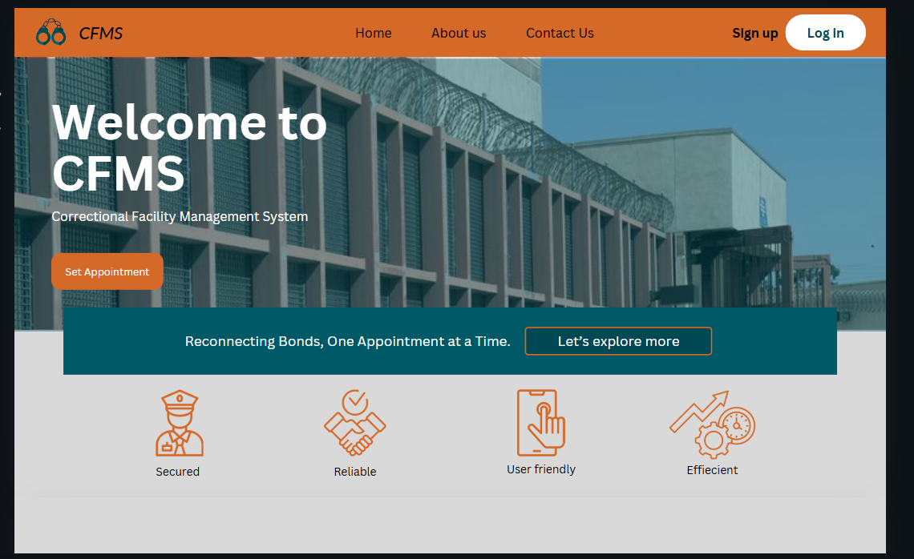
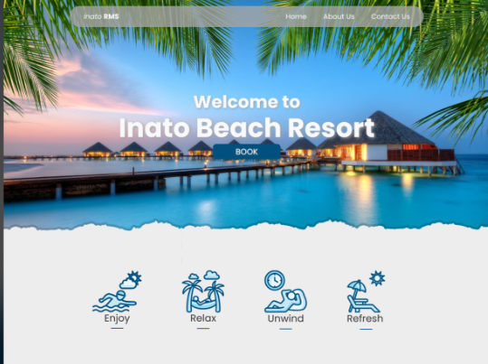
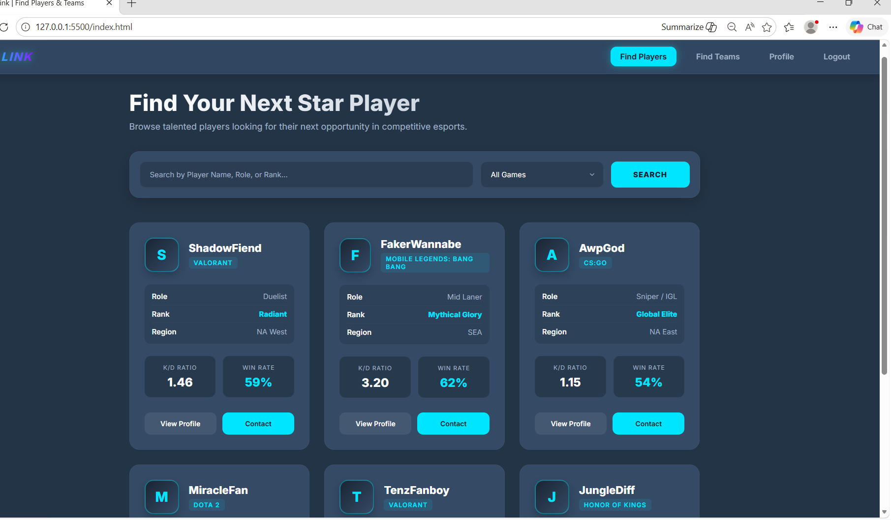
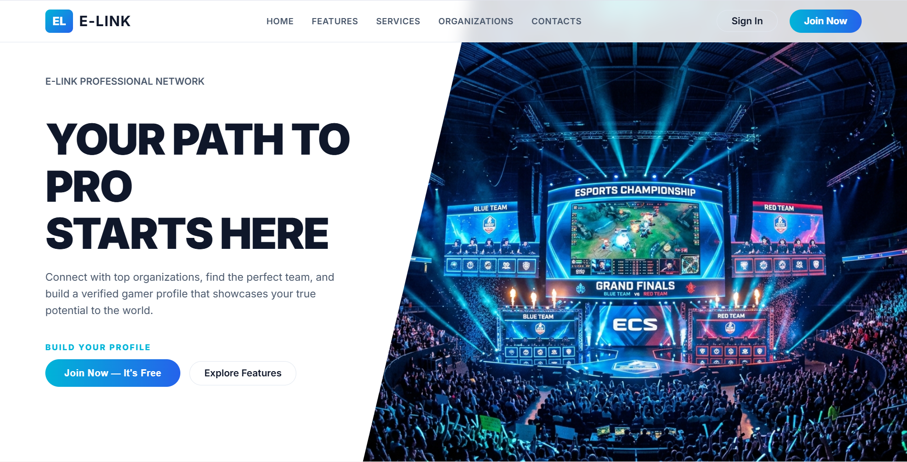

CURRENT
Bachelor of Science in Information Technology
Davao del Norte State College (DNSC)
Developing knowledge in software development, web technologies, systems analysis, database concepts, and user interface design.
HELLO, I'M
I’m a fourth-year Information Technology student who enjoys turning ideas into useful digital experiences through web development, system design, and creative problem-solving.
01 / ABOUT ME
I’m an IT student interested in creating practical, easy-to-use technology that solves real problems.
Through academic projects, I’ve explored website development, system planning, database concepts, and interface design. I enjoy learning by building, collaborating with others, and improving my work based on feedback.
To grow as an IT professional by applying my technical foundation, strengthening my development skills, and contributing to meaningful software and web projects in a collaborative environment.
02 / EDUCATION
Building a foundation in technology through coursework and hands-on academic projects.
Davao del Norte State College (DNSC)
Developing knowledge in software development, web technologies, systems analysis, database concepts, and user interface design.
Add your school name and strand
Update this section with your actual school, strand, graduation year, and any academic recognition you would like to share.
03 / SKILLS
A growing toolkit built through coursework and personal practice. Skill levels are not ranked so the focus stays on what I’m learning and using.
Building and styling responsive web pages.
Organizing code and collaborating on projects.
Planning user flows and creating interface concepts.
Academic exposure to system analysis and data organization.
Only list technologies you can comfortably discuss. Remove or update any skill that does not reflect your current experience.
04 / SELECTED PROJECTS
Academic projects that helped me practice system planning, interface design, and teamwork.

SYSTEM MANAGEMENTA system concept designed to help organize facility-related information and management workflows. Add the specific modules and technologies you implemented.

BOOKING EXPERIENCEA reservation system project focused on making it easier to present beach services and organize booking information.

DESIGN & PROTOTYPINGInterface concepts and system design work created to communicate user flows, page layouts, and the intended experience.

TEAMWORK & PRESENTATIONPresented a student project through a booth showcase, practicing communication, collaboration, and explaining a technology-based idea.
The links currently point to your GitHub profile. Replace each with the correct project repository or live demo when available.
05 / EXPERIENCE & ACHIEVEMENTS
Worked on school-based system and web project concepts, applying coursework to practical deliverables.
Participated in presenting a project idea and explaining its value to an audience.
Include only certificates, seminars, workshops, awards, or training you have actually completed. No certificates have been assumed in this template.
06 / CONTACT
I’m open to learning opportunities, collaboration, and connecting with people in technology.
Email me